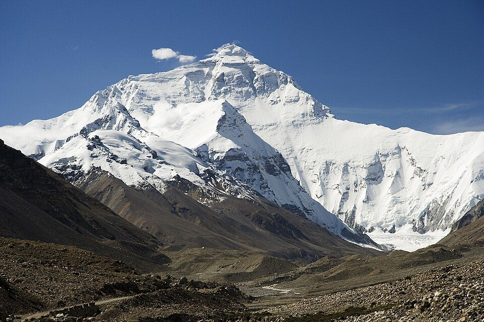

Mountains and mountain ranges
From Everest to the Andes: how mountains form, the highest peaks on each continent and why the Himalayas are still rising.


The great mountain ranges are born from collisions between tectonic plates. When two plates push against each other, the crust crumples and rises like a rug shoved against a wall. Volcanoes form other mountains, such as Teide or Kilimanjaro.
The roof of the world
Everest (Chomolungma in Tibetan, Sagarmatha in Nepali) stands 8,849 metres tall, according to the joint Chinese–Nepali measurement of 2020. It lies in the Himalayas, the range that formed when India collided with Asia some 50 million years ago. India is still pushing at 4–5 cm a year, and the Himalayas rise by about half a centimetre a year, although erosion wears them down.
At the summit there are limestone rocks containing fossils of sea creatures: 450 million years ago, that rock was the floor of a sea.
Everest was first climbed on 29 May 1953 by the New Zealander Edmund Hillary and the Sherpa Tenzing Norgay. Today more than 6,000 people have reached the top, and in good seasons queues form near the summit.
The fourteen eight-thousanders
There are only 14 mountains over 8,000 metres, all in the Himalayas and Karakoram. The second highest is K2 (8,611 m), much harder and more dangerous than Everest. The first person to climb all fourteen was the Italian Reinhold Messner, in 1986; the first Spaniard, Juanito Oiarzabal, in 1999; and the first woman to do so without dispute was Spain's Edurne Pasaban, in 2010.


The highest peak on each continent
| Continent | Mountain | Height |
|---|---|---|
| Asia | Everest | 8,849 m |
| Americas | Aconcagua (Argentina) | 6,961 m |
| Africa | Kilimanjaro (Tanzania) | 5,895 m |
| Europe | Elbrus (Russia) / Mont Blanc | 5,642 m / 4,806 m |
| Antarctica | Vinson Massif | 4,892 m |
| Oceania | Puncak Jaya (New Guinea) | 4,884 m |
Climbing them all is the Seven Summits challenge.
Records that depend on how you measure
- The tallest mountain from base to summit is Mauna Kea in Hawaii: about 10,200 metres from the ocean floor, though only 4,207 m rises above the water.
- The point farthest from the Earth's centre is the summit of Chimborazo in Ecuador, because the Earth bulges at the equator.
- The longest range is the Andes: about 7,000 km along South America. But the greatest range of all is underwater: the mid-ocean ridge, 65,000 km long.
The mountains of Spain
Spain is the second most mountainous country in Europe, after Switzerland.
- Its highest peak is Teide (3,715 m) on Tenerife: a volcano that, measured from the seabed, exceeds 7,500 metres.
- On the mainland, Mulhacén (3,479 m) in the Sierra Nevada, followed by Aneto (3,404 m), the roof of the Pyrenees.
- The Picos de Europa form Spain's first national park, created in 1918.
Videos to understand it better
- How Do Mountains Form?: Crash Course Geology #11CrashCourse
Videos are from YouTube and belong to their creators. They only load when you click them. See all videos →